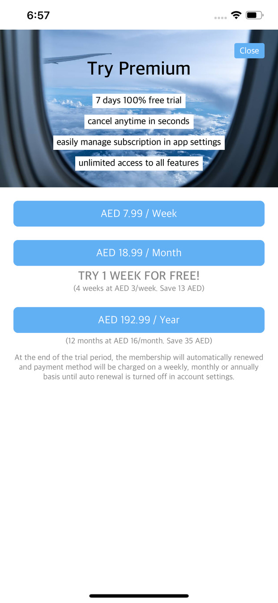
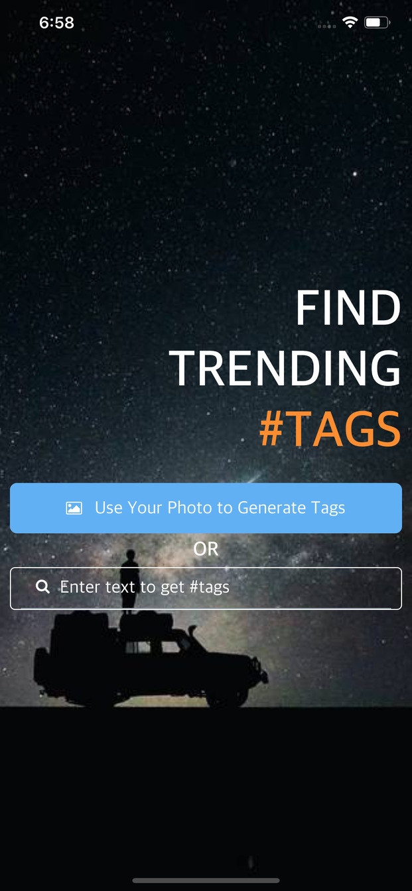
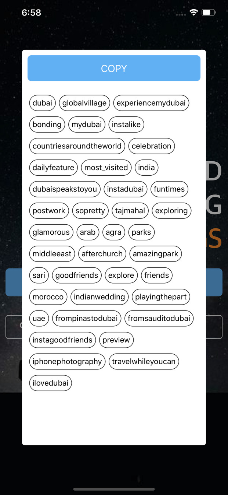
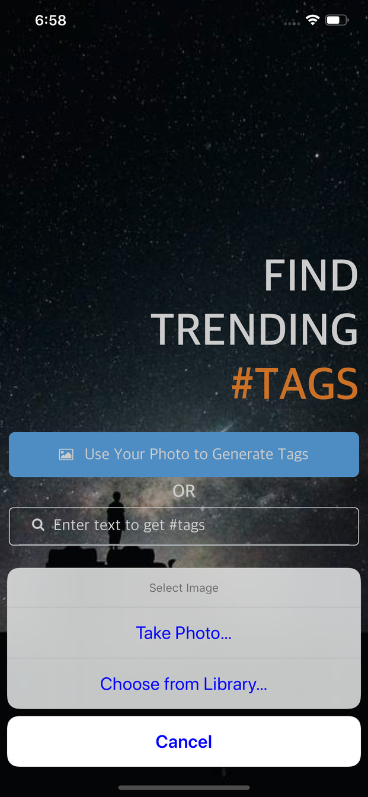

InstantTag
Generate trending tags to get more reach





Features
- Automatically generate trending tags from an image or keywor. Upload an image or enter a keyword, generate tags and click to copy
- Put trending tags on your content which will bring more traffic so you can get views followers and likes
- We have bots that continuously scorch the internet media and social networks to gather data about what is trending and the topics that people are most excited about. We then use this knowledge to generate tags for you that would get your content in front of more people
- Try for free for one week and then keep using if you like it
- Upload photo or search tags by inputting text like "globalvillage"